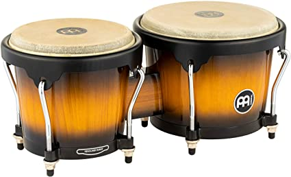
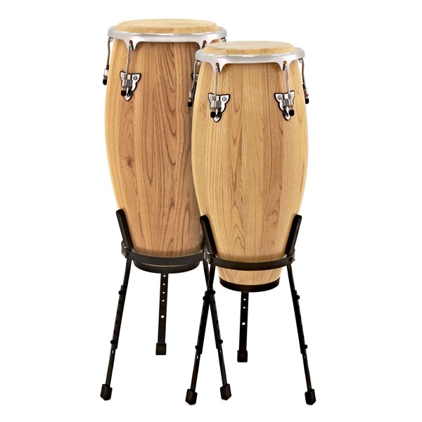
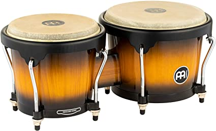
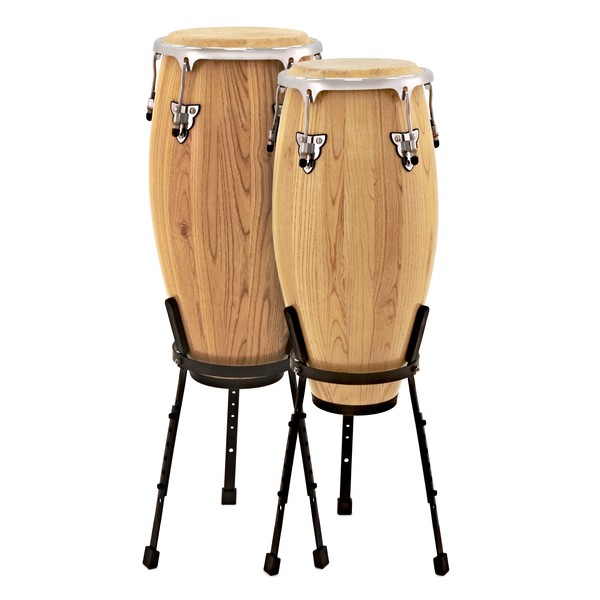

Attention: The following page is a summary of some genres englobed by the "Latin" term
Salsa music is a diverse and predominantly Spanish Caribbean genre that is popular across Latin America and among Latinos abroad. Salsa incorporates multiple styles and variations; the term can be used to describe most any form of popular Cuban-derived genre. At its root, however, salsa is a mixture of Spanish and African music, filtered through the music histories of Cuba and Puerto Rico, and adapted by Latin jazz and Latin popular musicians for Latino populations with diverse musical tastes. The basic structure of a salsa song is based on the Cuban son, beginning with a simple melody and followed by a coro section in which the performers improvise. Ed Morales has claimed that the "key staples" of salsa's origins were the use of the trombone as a counterpoint to the vocalist and a more aggressive sound than is typical in Cuban music; the trombone also carries the melody, while the rhythm is most generally provided by bongos, congas and timbales
 



Reggaeton music originated from Panama but became more popular in Puerto Rico. With time, it spread to other countries and became a globally accepted genre. It is largely influenced by hip hop, dancehall and Caribbean music. The sound is almost similar to Spanish reggae but it is a much younger genre that originated in the 1970s but only became popular in the 1990s. It has a lot of Jamaican influence. When it started, it was mainly dominated by male artists. However, female artists joined in. some popular Reggaeton artists include; Daddy Yankee, Arcangel, Don Omar and Yandel. It was highly influential to the youth but it received a lot of criticism. The government even started a campaign against it 1995. That, however, did not kill Reggaeton in Puerto Rico. It continued to grow. By 2004, it was widely spread in Europe and the US. In 2017, Luis Fonsi and Daddy Yankee released the track ‘Despacito’ and it received more than a billion views in just three months.
Reggaeton Singers in the 90s


Reggaeton Singers 2012-Present

Bachata is a style of dance that originated in the Dominican Republic. It is danced widely all over the world but not identically. The basics to the dance are three-step with a Cuban hip motion, followed by a tap including a hip movement on the 4th beat. The knees should be slightly bent so the performer can sway the hips easier. The movement of the hips is very important because it’s a part of the soul of the dance
The Cuban Bolero developed independently from the Spanish Bolero, resulting in two fairly different styles. While both versions focus on the topic of love, Cuban Bolero is less dramatic than Spanish and tends to use more sentimental lyrics. Bolero music in the Cuban tradition contrasts that of Spain in some ways, although they do share some characteristics. Like Spanish Bolero, Cuban Bolero is played at a slow to moderate tempo, with rhythmic figures under a melody line. However, the Cuban style is in 2/4 or 4/4 meter instead of 3/4, utilizes multiple rhythmic lines instead of just one to support the melody, and typically has two contrasting sections instead of three. Singing is also more prevalent in the Cuban Bolero style than in Spain.
Merengue is a type of music and dance originating in the Dominican Republic, which has become a very popular genre throughout Latin America, and also in several major cities in the United States with Latin communities. Merengue developed as a music circa the middle of the 19th century of Central African particularly Congo stylistic origins and has evolved and reached many different markets since. The traditional signature rhythm figure of merengue is the quintillo, which is essentially a syncopated motif whose pattern is broken by five successive drumhead hits at the transition between every second and third beat, alternating between the hand and the stick.